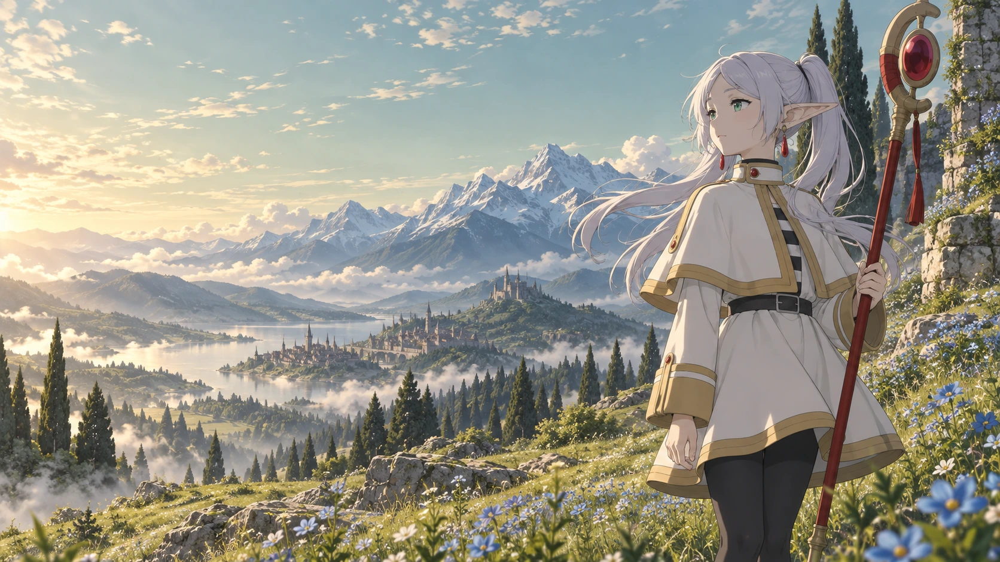

✧ A JOURNEY BEYOND THE END
葬送のフリーレン
FrierenBeyond Journey’s End
Some endings are just
the beginning of a new story.

Some endings are just
the beginning of a new story.
The great adventure is over.
The most human one has just begun.
For an elf who has lived for more than a thousand years, a decade can feel like a passing moment. But the people in those moments can change everything.
Follow Frieren into a world of small discoveries, unlikely friendships, and the quiet art of understanding one another.
Explore the official animeThere is always a little more to discover.
Three glimpses of a world
worth taking your time in.
The road is only part of the story.
Sometimes the most beautiful magic simply gives someone a reason to smile. Look closely. There is wonder underfoot.
The journey feels different when someone is walking beside you. Little conversations can become the things you remember most.
Some places hold a memory long after the moment has passed. Return to them, and the distance between then and now feels a little smaller.